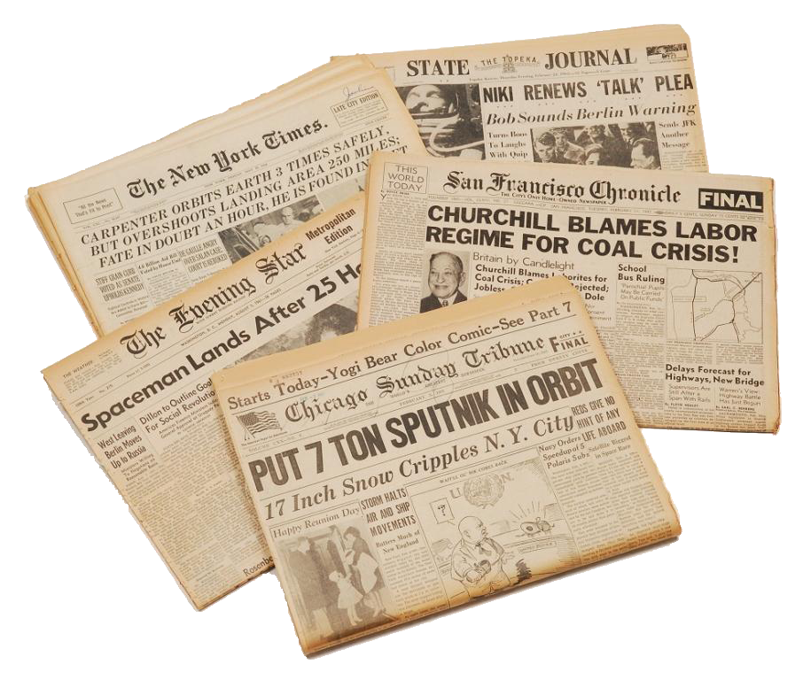
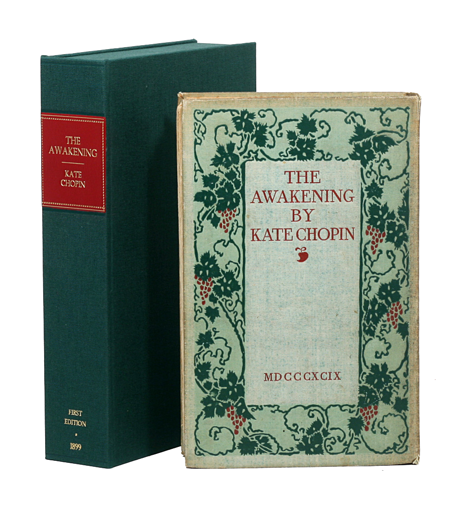

그녀의 책은 노골적 성묘사로 많은 비난을 받았으나 현대에 와서는 가장 영향력 있는 미국 문학 작품 중 하나로 인정받는다. 출간되자 온갖 비난과 경멸이 대상이 되었다. 쇼팽은 재정난은 물론 문인으로서의 미래까지 의심을 받았다. 책이 발표되자 마자 사라질 위기에 처했다. 당대는 여성의 부도덕한 일탈을 그렸다는 이유로 출판 금지에 처했다. 그러나 그녀는 미국 문학사에서 중요한 위치를 지니게 된다.

당시 보편적인 여성상과 어머니상에 대해 거부감을 가진 주인공이 나온다. 당시로선 시대를 앞서가는 새롭고 혁신적인 생각이었다. 그녀는 이야기를 통해 기존의 여성상을 부수고 자아실현의 주체로서의 여성을 재조명하였다. 주인공은 남성에 종속되는 삶을 떠나 자신만의 정체성과 자유를 깨닫게 된다. 작가는 여성 문제와 함께 인간의 보편적인 문제인 자아와 사회의 문제까지 폭넓게 탐구한다.

그녀는 당시 엄청난 반항을 불러왔다. 그러나 이후 20세기가 되어 그녀의 작품은 재조명되었고 지금은 지위를 인정받는 미국의 대표 작가가 되었다. 그녀의 작품은 기존의 여성에 대한 억압을 떠나 독립적 개인으로서 여성을 그렸으며 더 나아가 독립을 이루고 자아를 해방시키는 모습을 소설을 통해 실현시켰다.